진료예약
내 가족을 대하듯이 편안하면서 정확한 진단 그리고 빠른 결과를 알려드리는 고객우선을 추구하는 건강관리센터입니다.
예약 전 상담
검사프로그램,검사인원,검진 일정 협의(필요서류 : 기업체확인서, 협약서,사업자등록증 1부)
-
예약
1 건진 대상자 명단 송부
인적사항(성명, 주민번호, 의료보험증번호, 근무구분, 자격취득일, 휴대폰번호, 선택검진)
2 검사관련(예약 희망일, 추가희망 검사)
공단청구 관련서류(확정자 명단) -
건진일시
유의사항(*참고:건진전 유의사항)
2일정변경 및 취소는 최소 10일전까지 담당자에게 연락을 하셔서 조정해 주시기 바랍니다. -
결과상담 및 검진비 청구
1 우편 수령 : 2주정도 (주말제외) -> 해당 사업장 보건관리자에게 배송
2 검진비 청구방법 및 일자 :매월 말일에 계산서 발행
3 검진비용 : 당일 개인/법인카드 결재 )
매월 일괄 법인카드 결재
청구 후 입금 및 결재
- 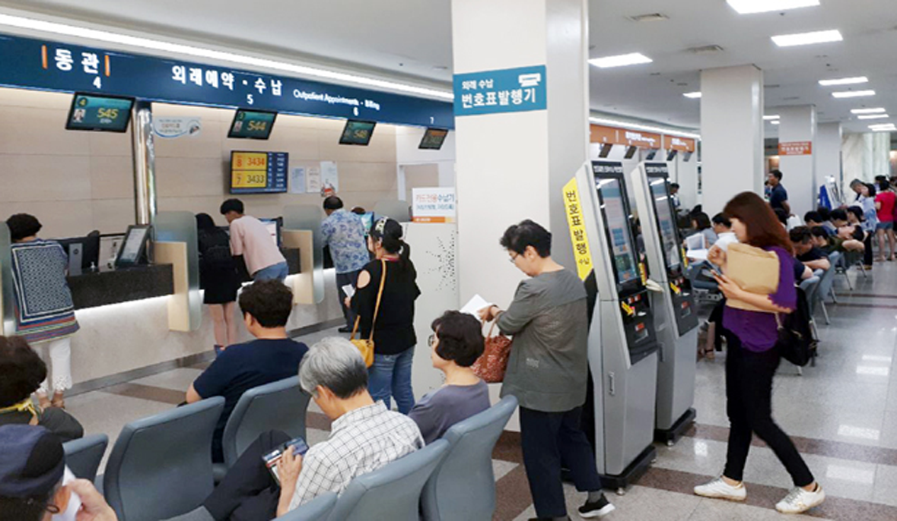
진료예약
내 가족을 대하듯이 편안하면서 정확한 진단 그리고 빠른 결과를 알려드리는 고객우선을 추구하는 건강관리센터입니다.
건강검진유의사항
내 가족을 대하듯이 편안하면서 정확한 진단 그리고 빠른 결과를 알려드리는 고객우선을 추구하는 종합건강관리센터입니다.
-
검진전날
1 문진표 작성은 고객님의 정확한 건강상태와 위험요인을 파악하고 건강 진단결과를 평가하는데 중요한 자료가 되므로 원활한 건강진단을 위하여 내원 전까지 작성하시기 바랍니다.
2 검진 2-3일 전부터는 술, 육류, 기름진 음식은 금합니다. 검사 전날 저녁식사는 8시이전에 가볍게 드시고 저녁 9시 부터 검사 종료시까지 금식하여 주십시오.(물, 흡연, 껌, 사탕 등도 삼가주십시오.)
-
검진당일
귀중품 휴대, 진한 화장, 매니큐어는 자제하여 주시고 종합건강진단센터 1층으로 오십시오.
-
여성검진자
1 생리중, 임신중, 임신가능성이 있는 경우 검사에 제한이 있을 수 있으므로 미리 직원과 상담하십시오.
2 검진당일 샤워나 목욕은 삼가 하십시오.
- 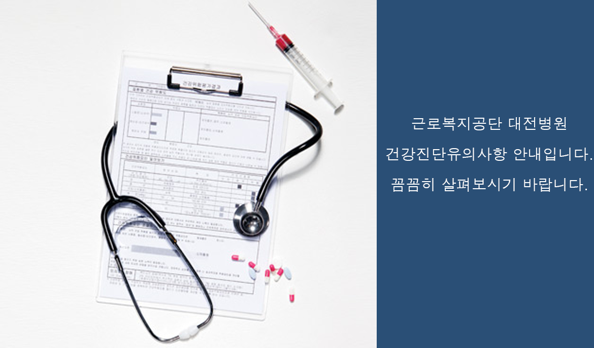
- 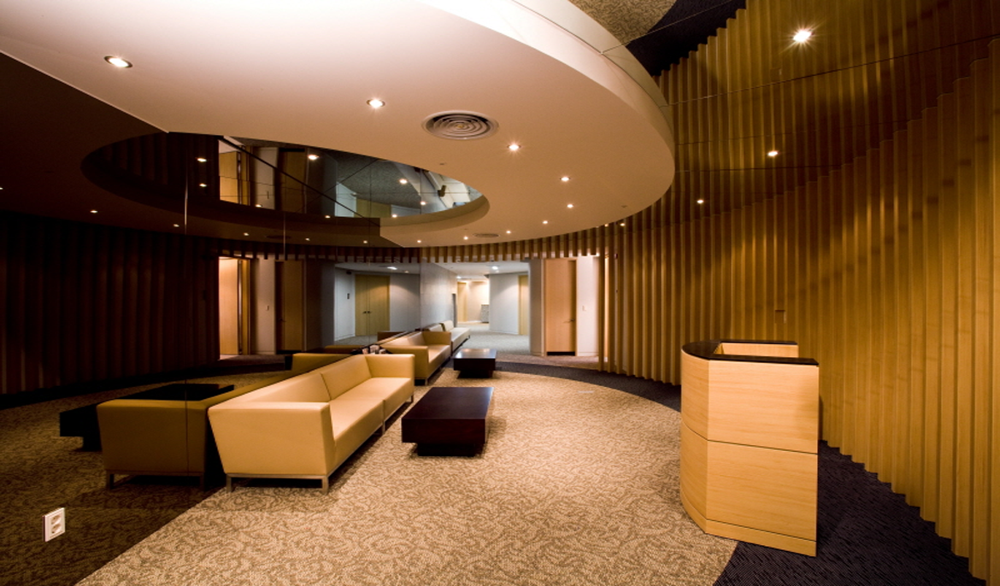
건강검진유의사항
예약일을 변경시 상당기간 연기될 수 있습니다.
변경은 검진 7일전까지 042-670-5195, 5196으로 연락주시기 바랍니다
프로그램 안내
내 가족을 대하듯이 편안하면서 정확한 진단 그리고 빠른 결과를 알려드리는 고객우선을 추구하는 건강관리센터입니다.
-
행복플러스형
1 종합건강검진 기본형으로 성인병 예방과 주요장기의 조기 암진단 및 예방을 목적으로 실시하는 건강검진 프로그램입니다.
2 공통검사항목 : 예진,문진,소변,대변검사,위내시경(일반),의학상담,식생활평가&영양상담,심전도검사 및 흉뷰X-선촬영,염증검사
3 검사정보 : 소요시간 2시간
남자:30만/여자:33만원4 추가검사 : MRI검사,CT검사,초음파검사,위장검사,대장검사
-
추가내용
수면내시경과 장검사(직장내시경/ 대장내시경)는 추가검사이며, 희망하시는 경우 건강검진 예약시 반드시 신청하시기 바랍니다.
-
검사항목
1 남자 : 전립선 암 검사 (P.S.A)
2 여자 : 난소암검사(CA125), 유방X-선, 자궁세포검사, 골밀도검사
- 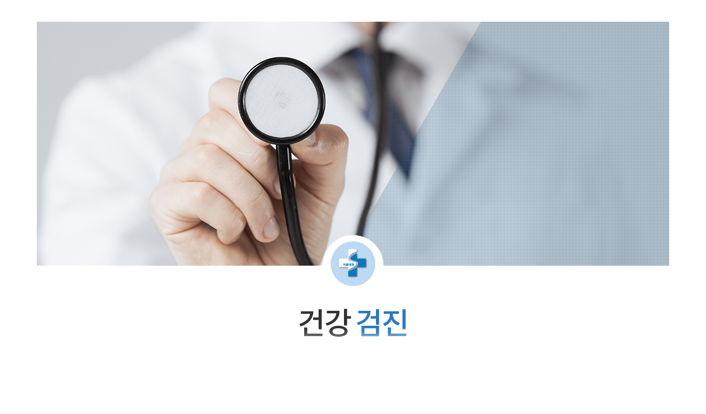
- 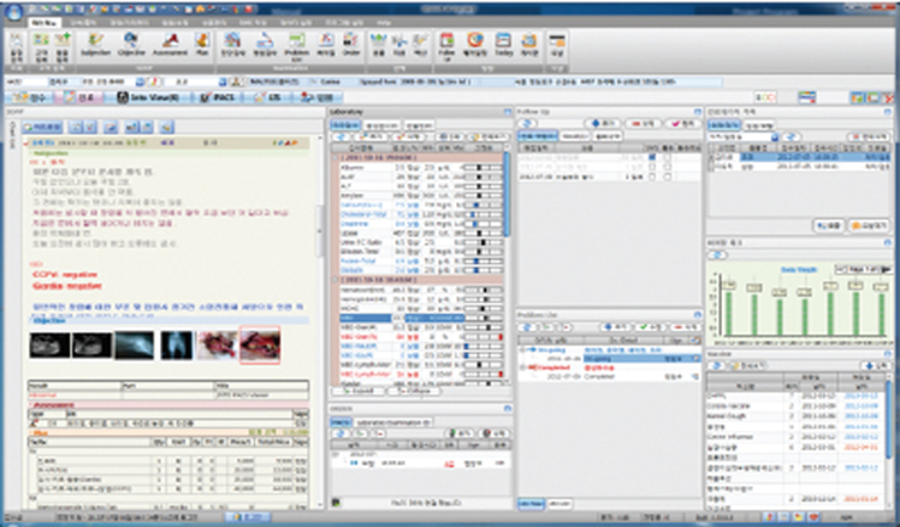
- 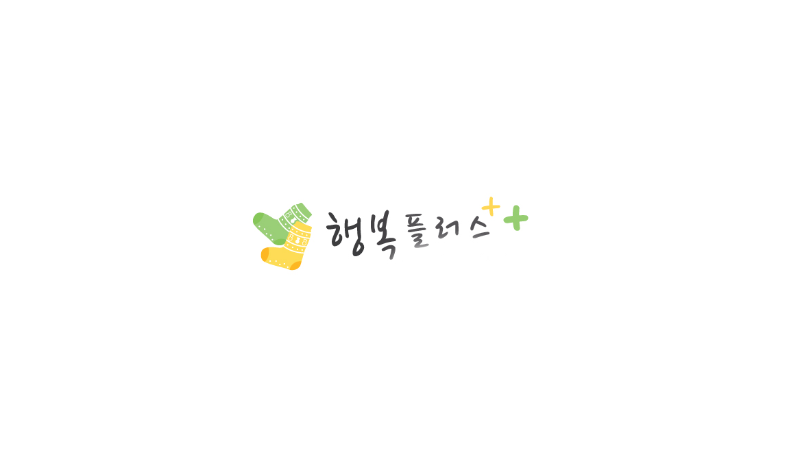
프로그램안내
다양한 프로그램을 안내드립니다.
외과
근로복지공단 대전병원 외과에 찾아주셔서 감사합니다.
-
소화 위장관수술
위궤양천공, 십이지장궤양 천공, 소장질환 치료 등을 진행합니다.
-
외과진료
외과는 의학의 한 분야로 내과에 대비되는 학문 분야이다. 내과에서는 주로 약물치료를 하는 반면에 외과에서는 수술로 환자의 질병이나 상태를 치료한다. 영어로 외과를 ‘surgery’라고 하는데 이는 그리스어인 ‘cheirourgike’에서 기원하였다고 한다. 이를 풀이하면 ‘hand(손)’+‘work(작업)’ 즉, 손으로 하는 작업이라는 뜻입니다.
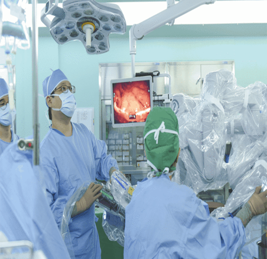
간담도.췌장수술
위궤양천공, 십이지장궤양 천공, 소장질환 치료 등을 진행합니다.
-
치료대상
위궤양천공, 십이지장궤양 천공, 소장질환 치료 등에 걸린 대상자
-
의료진 및 진료일정
1 날짜 : 월요일~금요일
2 시간: 오전,오후
-
의료진 : 김영민
주요진료분야 : 갑상선 암 검진 및 수술
갑상선 양성질환 진단 및 수술
유방암 검진 및 조직검사
유방 양성질환 진단 및 수술
급성 충수염
위장관 천공 및 복막염
항문 양성 질환
탈장
- 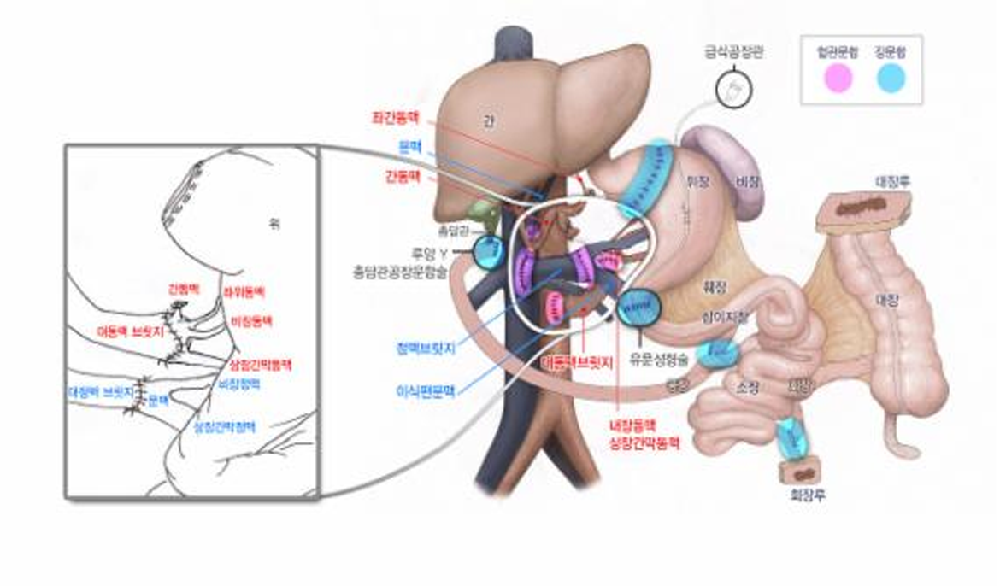
외과진료안내
근로복지공단 대전병원 외과진료안내입니다.
대장항문클리닉
염증성장질환, 대장폴립, 항문출혈, 변비, 치질, 항문소양증, 항문주위농양, 충수돌기염, 맹장염
-
치료대상
염증성장질환, 대장폴립, 항문출혈, 변비, 치질, 항문소양증, 항문주위농양, 충수돌기염, 맹장염 환자 대상
-
의료진 및 진료일정
1 요일 : 월요일~금요일 *토요일,일요일은 쉽니다.
2 시간 : 오전,오후
-
의료진 : 김영민
1 주요진료분야 : 갑상선 암 검진 및 수술
갑상선 양성질환 진단 및 수술
유방암 검진 및 조직검사
유방 양성질환 진단 및 수술
급성 충수염
위장관 천공 및 복막염
항문 양성 질환
탈장
- 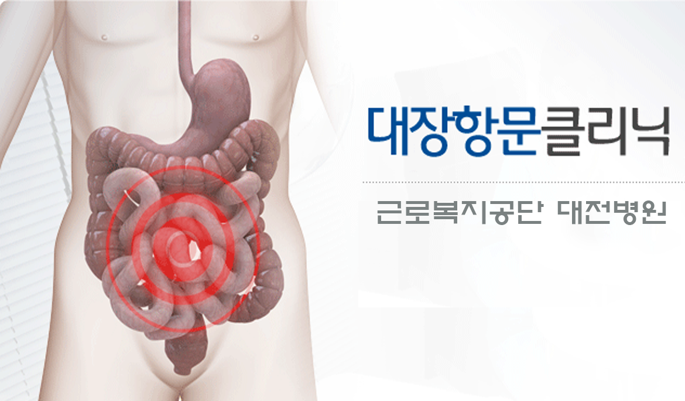
대장항문클리닉
근로복지공단 대전병원 외과 진료안내입니다.
관절염
관절의 염증(붓고 아픈 것)을 말하는 것입니다.
뼈와 뼈들이 맞닿아서 움직이는 관절은 매끄러운 연골로 덮여 있어 충격을 완화시키고 보호해주면서 원활하게 움직이게 해줍니다.
연골은 혈관이 없어 관절 속에 있는 관절액을 통해 영양을 공급 받으며 신경이 없어 이상이 있어도 아픈 것을 느끼지 못합니다.
따라서 관절염으로 아픈 이유는 관절이 붓거나 주위 조직에 자극을 주기 때문입니다.
인공관절안내
인공관절에 대한 설명입니다.
-
인공관절 수술법
인공관절 수술은 약물이나 보존요법으로 치료가 불가능한 말기의 관절 병변을 수술로써 치료하는 방법입니다. 수술 후, 통증은 사라지고 정상인과 같이 생활할 수 있습니다. 많은 경우에 인공관절 수술은 자기 뼈를 잘라내고 인공관절을 삽입하는 것으로 잘못 인식되고 있습니다. 인공관절 수술이란 치아에 충치가 있을 때, 충치부분을 곱게 다듬고 금, 백금으로 겉면을 씌워 주는 것처럼 관절 겉면에 특수 금속으로 만든 얇은 막을 씌워주고, 씌운 뼈와 뼈 사이에 특수 플라스틱이나 세라믹을 삽입하여 그 사이가 매끈매끈하게 움직이게 하는 수술이므로 자기 뼈는 그대로 보존하게 됩니다. 엉덩이관절이나 무릎관절, 발목관절의 경우, 관절을 형성하는 뼈의 겉면을 곱게 다듬고, 얇은 특수 금속막을 다듬은 뼈 겉면에 씌우면서 중간에 인공 물렁뼈 역할을 하는 특수 플라스틱을 삽입해 줌으로써 엉덩이 관절과 무릎관절, 발목관절이 유연하게 움직이도록 해줍니다. 인공관절수술은 양측 엉덩이관절 또는 무릎관절, 발목관절을 동시에 시행할 수 있으며, 한쪽 수술시간은 약 40분 내지 1시간 정도가 소요됩니다. 흔히 당뇨병, 심장병 및 고혈압이 있으면 수술이 불가능하다고 알려져 있으나, 적절한 내과 치료를 받으면 수술이 가능합니다.
-
수술효과
관절염으로 인한 통증이 완전히 없어지게 되므로 정상인과 똑같이 걷고 생활할 수 있으며, 휘어진 다리가 바르게 교정되어 키가 커지는 효과가 있습니다.수술 후 하루 반 정도가 지나면 화장실 출입이 가능합니다.보행연습을 시작해 합병증이 없는 경우, 수술 후 15일이면 퇴원하여 집에서 요양 하시게 됩니다.
-
고관절
아프지 않게 하면서 무릎 기능을 최대한 보존 하는데 있습니다. 유의해야할 사항은 한번 퇴행성 변화, 즉 노화가 시작되면 다시 이전상태로 돌아가기 힘들며, 노화는 시간이 갈수록 심해진다는 점입니다. 그렇다고 해서 아무런 치료도 하지 않고 아픈 것을 참고 지내는 것은 현명하지 못합니다. 치료를 하면 통증이 없어 졌다가 무리를 하면 다시 아플 수 있으며, 증상은 병 진행정도에 비례하지만, 반드시 그렇지는 않고 통증도 항상 있는 것이 아니라 시시각각 변할 수 있습니다. 치료는 수술을 하지 않는 법과 수술을 하는 법으로 크게 나뉘며, 수술을 하지 않는 방법은 대중요법, 물리치료, 운동치료, 약물요법이 있습니다.
- 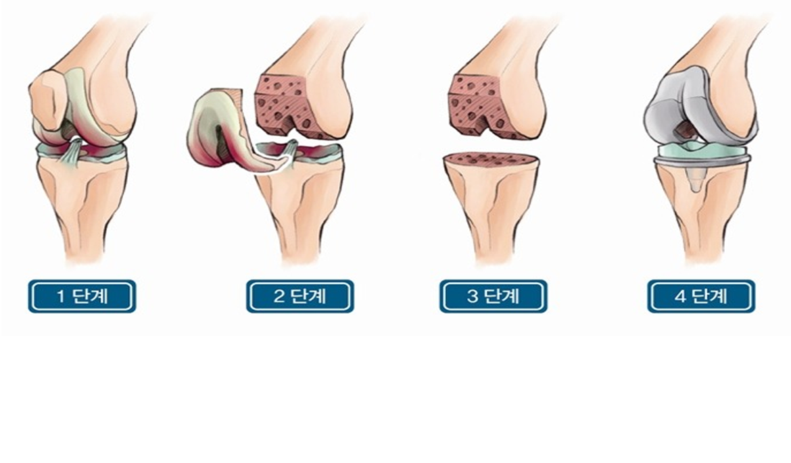
인공관절안내
인공관절안내입니다. 내용을 꼼꼼히 살펴보시기 바랍니다.
관절내시경
퇴행성 관절염이나 류마티스성 관절염과 같은 각종 관절염, 관절 외상 특히 스포츠로 인한 관절 및 인대 손상, 척추 디스크, 관절내의 유리체 등 관절의 이상이 있을 때에 그 대상이 됩니다. 관절내시경 수술 대상 관절은 처음에 무릎관절에서 시작된 관절내시경 진단과 수술에서 점차 다른 관절로 확대되어 최근에는 어깨 관절, 팔꿈치 관절, 엉덩이 관절, 손목 관절, 발목 관절, 손가락 관절 등에까지 확대되고 있습니다.
-
관절내시경 수술이란
피부를 크게 절개하여 직접 병변을 노출시켜서 시행하는 종래의 수술과는 달리 피부를 아주 조금 절개하고도 정확한 진단과 적절한 치료를 할 수 있는 첨단의 수술방법입니다. 무릎 관절내시경 수술은 1918년에 최초로 도입되어 괄목할 만한 발전을 해 왔습니다. 현재에 와선 주로 각 관절부위의 내부 이상의 진단 및 손상 부위와 범위를 직접 관찰할 수 있어 필수적인 진단 및 치료 방법이라 할 수 있습니다.
-
관절내시경의 장점
1 수술 절개 부위가 작아 빠른 시간 내에 일상생활로 복귀할 수 있습니다.
2 수술 후 통증이 적습니다.
3 카메라를 통해 관절 속을 직접 보는 것이므로 진단이 정확합니다.
4 진단과 수술이 동시에 가능합니다.
-
관절내시경의 단점
무릎 반월상 연골판 손상
관절내의 유리체
급, 만성 외상으로 인한 손상
무릎 십자 인대 손상
슬개골 연골 연화증
원판형 연골판
퇴행성 관절염
활막염 및 추벽 증후군
류마티스 관절염, 화농성 관절염, 통풍성 관절염
박리성 골연골염, 골연골 손상
관절 유착증
관절 검사 목적 시행, 수술 효과 판정을 위해 2차적으로 필요한 경우 수술후 관리
- 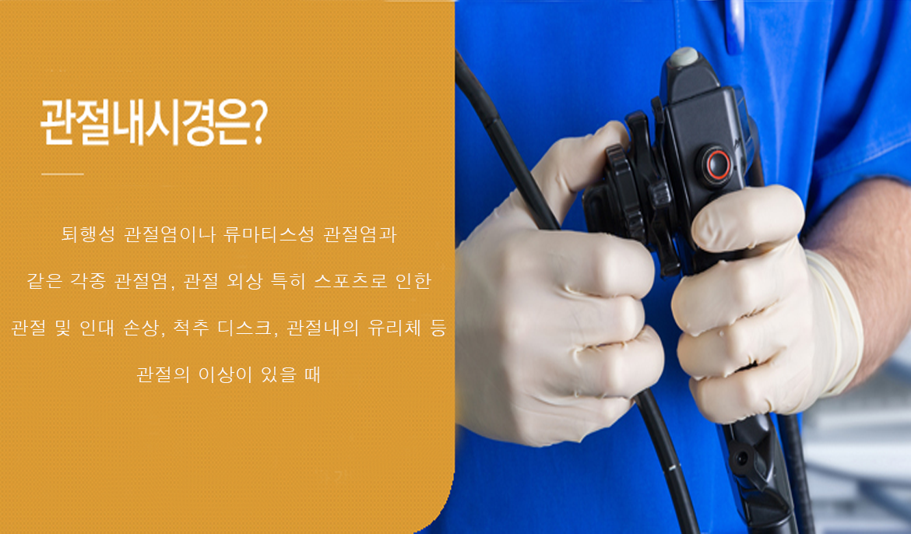
성인작업치료
작업치료는 신체적 정신적인 장애나 발달장애가 있는 환자들이 일상생활 중 요구되는 활동을 스스로 수행할 수 있도록 그 기능의 회복을 도와주는 치료 프로그램입니다.
재활전문센터
퇴원안내사항입니다.
| 구분 | 상세내용 |
|---|---|
| 퇴원통지 |
1 담당의사로부터 퇴원이 결정되면간호사실에서 퇴원통지를 해드립니다. |
| 진료비납부 |
1 퇴원통지를 받으시고 병실내에서 기다리시다가 원무과에서 퇴원 완료에 대한 연락이 오면 퇴원비 수납창구에 진료비를 납부하시면 됩니다. |
| 퇴원 |
1 수납한 퇴원수속 완료증을 병동에 제출하시고 퇴원약을 받아 약복용 및 진료에 대한 설명을 듣고 퇴원 하시면 됩니다. |
-
근로복지공단 대전병원
042.670.5114
대전광역시 대덕구 계족로 637 우 : 34384
Fax.042)631-8250,8260
-
진료시간
평일 : 08:30 ~ 17:30
토요일 : 08:30 ~ 12:30
휴무 : 일요일,공휴일
-
찾아오시는 길